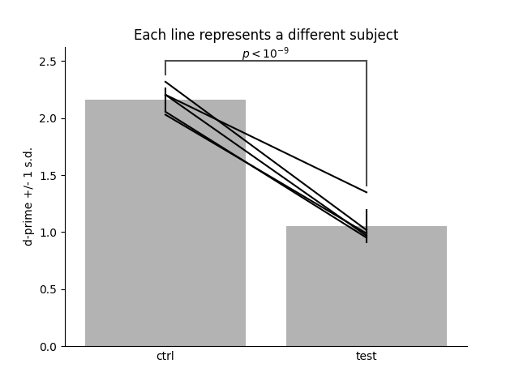
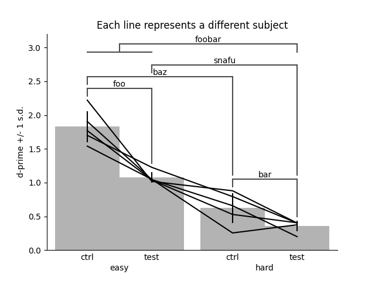

Note
Go to the end to download the full example code.
Analysis demo#
This example simulates some 2AFC data and demonstrates the analysis
functions expyfun.analyze.dprime() and
expyfun.analyze.barplot().
- 
- 
# Author: Dan McCloy <drmccloy@uw.edu>
#
# License: BSD (3-clause)
import matplotlib.pyplot as plt
import numpy as np
import pandas as pd
import expyfun.analyze as ea
print(__doc__)
# simulate some 2AFC data
targets = 50
foils = 50
a_prob = 0.9
b_prob = 0.6
f_prob = 0.2
subjs = ["a", "b", "c", "d", "e"]
a_hit = np.random.binomial(targets, a_prob, len(subjs))
b_hit = np.random.binomial(targets, b_prob, len(subjs))
a_fa = np.random.binomial(foils, f_prob, len(subjs))
b_fa = np.random.binomial(foils, f_prob, len(subjs))
a_miss = targets - a_hit
b_miss = targets - b_hit
a_cr = foils - a_fa
b_cr = foils - b_fa
data = pd.DataFrame(
dict(
a_hit=a_hit,
a_miss=a_miss,
a_fa=a_fa,
a_cr=a_cr,
b_hit=b_hit,
b_miss=b_miss,
b_fa=b_fa,
b_cr=b_cr,
),
index=subjs,
)
# calculate dprimes
a_dprime = ea.dprime(data[["a_hit", "a_miss", "a_fa", "a_cr"]])
b_dprime = ea.dprime(data[["b_hit", "b_miss", "b_fa", "b_cr"]])
results = pd.DataFrame(dict(ctrl=a_dprime, test=b_dprime))
# plot
subplt, barplt = ea.barplot(
results,
axis=0,
err_bars="sd",
lines=True,
brackets=[(0, 1)],
bracket_text=[r"$p < 10^{-9}$"],
)
subplt.yaxis.set_label_text("d-prime +/- 1 s.d.")
subplt.set_title("Each line represents a different subject")
# significance brackets example
trials_per_cond = 100
conds = ["ctrl", "test"]
diffs = ["easy", "hard"]
colnames = [
"-".join([x, y])
for x, y in zip(conds * 2, np.tile(diffs, (2, 1)).T.ravel().tolist())
]
cond_prob = [0.9, 0.8]
diff_prob = [0.9, 0.7]
cond_block = np.tile(np.atleast_2d(cond_prob).T, (2, len(subjs))).T
diff_block = np.tile(np.atleast_2d(np.repeat(diff_prob, 2)).T, len(subjs)).T
probs = cond_block * diff_block
shape = (len(subjs), len(conds) * len(diffs))
rawscores_targ = np.random.binomial(trials_per_cond, probs, shape)
rawscores_foil = np.random.binomial(trials_per_cond, probs, shape)
hmfc = np.c_[
rawscores_targ.ravel(),
(trials_per_cond - rawscores_targ).ravel(),
(trials_per_cond - rawscores_foil).ravel(),
rawscores_foil.ravel(),
]
dprimes = ea.dprime(hmfc).reshape(shape)
results = pd.DataFrame(dprimes, index=subjs, columns=colnames)
subplt, barplt = ea.barplot(
results,
axis=0,
err_bars="sd",
lines=True,
groups=[(0, 1), (2, 3)],
group_names=diffs,
bar_names=conds * 2,
bracket_group_lines=True,
brackets=[(0, 1), (2, 3), (0, 2), (1, 3), ([0, 1], 3)], # [2, 3]
bracket_text=["foo", "bar", "baz", "snafu", "foobar"],
)
subplt.yaxis.set_label_text("d-prime +/- 1 s.d.")
subplt.set_title("Each line represents a different subject")
plt.show()
Total running time of the script: (0 minutes 0.591 seconds)